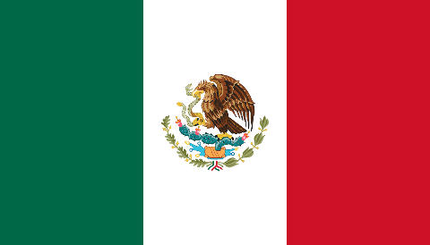

About Me
My name is Angel, and I am from Nezahualcoyotl, Mexico State, Mexico. I am currently working as a Mentor who serves BYU-Pathway Worldwide Students. When I am not studying, I enjoy watching movies and playing video games. When I have even more time, I love to go hiking. I love nature.
Mexico
Mexico, officially the United Mexican States, is a country in the southern portion of North America. It covers 1,972,550 km2 (761,610 sq mi), making it the world's 13th-largest country by area; with a population of almost 130 million, it is the 10th-most-populous country and the most populous Spanish-speaking country. It shares land borders with the United States to the north, with Guatemala and Belize to the southeast; as well as maritime borders with the Pacific Ocean to the west, the Caribbean Sea to the southeast, and the Gulf of Mexico to the east. (Source: Wikipedia)